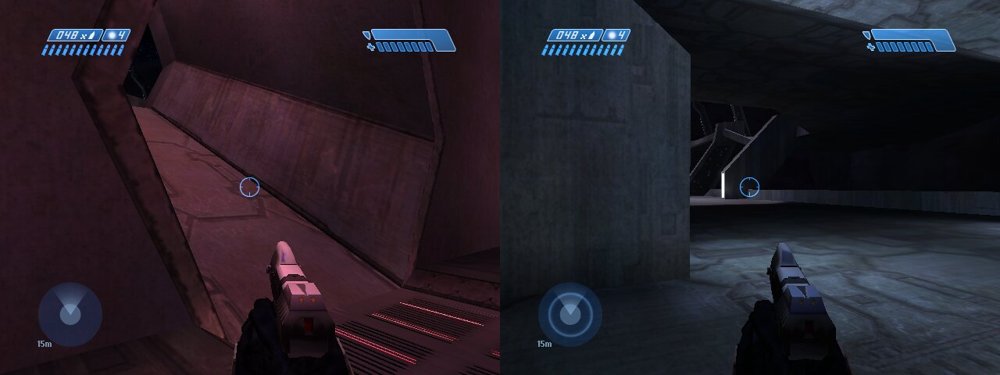
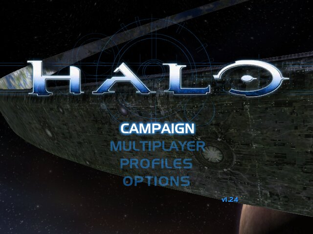
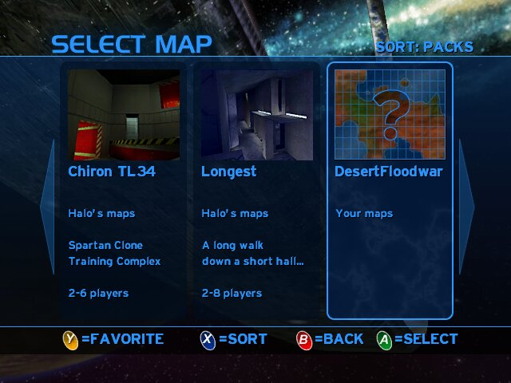
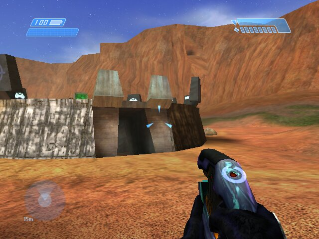

Halo 1 Unlimited
Everything players ever wanted from Xbox Halo, on the Xbox itself. Halo 1 Unlimited is built from OpenCE, the community's decompilation of Halo: Combat Evolved. It plays and feels like the stock Xbox game, with modern netcode, room for 16 consoles and far more memory for textures.

What's in it today
Netcode for 16 consoles
OpenCE's distributed netcode replaces Halo's lockstep. Each console predicts its own player and the host decides. Up to 16 consoles play together, on system link or over XLink Kai.
Join in progress
Consoles can drop into a match that's already running, even on a map they don't have yet. They download it first, then spawn.
AI everyone sees
The host runs the AI and sends it to every console, so multiplayer maps built around AI play the same for all players. Stock Custom Edition never synced AI.
Maps in the lobby
Folder maps download from the host while you wait, over three connections. The host's name has a crown, each console shows its progress, and the countdown waits for everyone.
Map browser
Folder maps and packs on the hard drive, each with its own picture and description. You can sort them, star favourites, hide maps you don't want and see how often each one is played.
More texture memory
The texture cache borrows the part of Halo's 22 MB of tag memory that a map leaves empty. Blood Gulch gets 34.5 MB, where retail Halo has 22. A console upgraded to 128 MB gets up to 60 MB.
Stock feel
It uses retail Halo's saves, profiles and gametypes, its menus and its look. The host gets an END GAME option in the pause menu.
Logs that help
Every console logs its BIOS and memory, map downloads, and any frame that took 100 ms or more. When it runs from a disc or an ISO, the logs go to the game's save space instead.
Texture memory, map by map
On a stock 64 MB Xbox, measured in xemu. Stock multiplayer maps hold 20 to 23 MB of textures in all, so on most maps every texture now fits at once.
| Map | Texture cache | Borrowed from tag memory |
|---|---|---|
| Retail Halo / Halo Universal | 22.0 MB | none |
| Blood Gulch | 34.5 MB | 13.7 MB |
| Gephyrophobia | 32.7 MB | 11.9 MB |
| Death Island (port) | 30.3 MB | 9.5 MB |
| Hugeass (port) | 24.8 MB | 4.0 MB |
Screenshots



Where it's going
- Done 16 consoles, join in progress, synced AI, lobby downloads
- Done Borrowed tag memory for textures, bigger caches on 128 MB consoles
- Next A lobby screen that shows all 16 consoles
- Next Smoother big AI battles, and memory sized for multiplayer AI
- Next Per-BIOS fixes, chosen from what the console reports
- Custom campaigns, and campaign conversion in Halo Map Porter
Getting it
Halo 1 Unlimited is in testing. The source is public and builds into an XBE from your own copy of Halo (see the build guide). Test builds are shared with the playtest group, and this page will link to downloads when they're ready.
You need your own copy of Halo: Combat Evolved for the Xbox. No game data is distributed here.